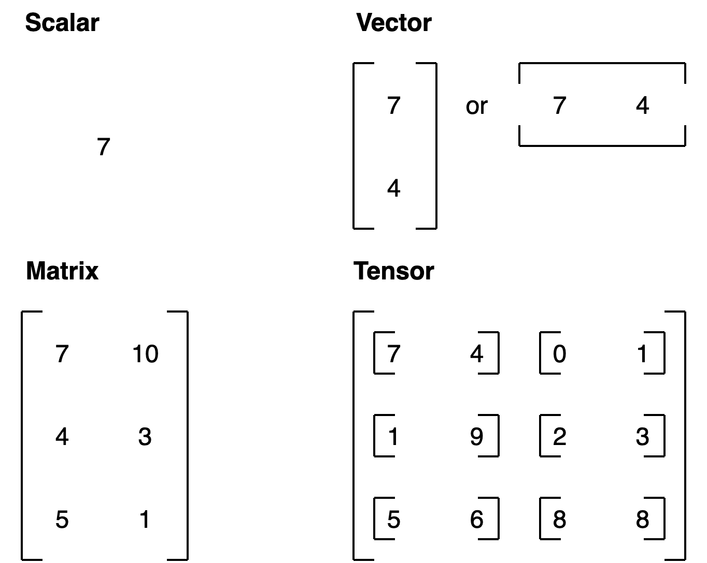
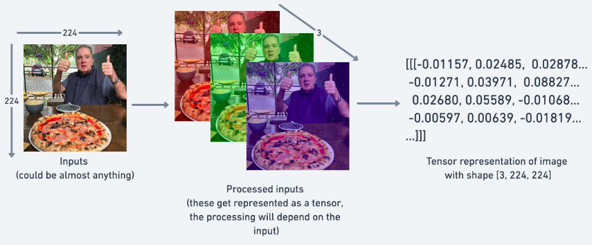
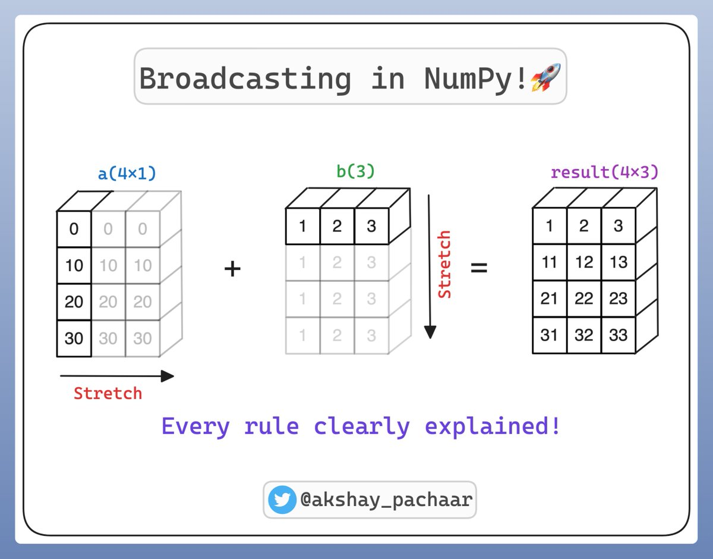

Tensors are the core Data Structure in PyTorch


PyTorch convention ordering for images is: (channels, height, width).
Many PyTorch errors come from tensor issues
Master tensors now, avoid frustration later
[6, 1] means:
Shape mismatches = most common PyTorch errors
Model expects first dimension = batch size
Think of it like a stack of papers:
For neural networks: float32 is the sweet spot
From Python lists:
From NumPy:
Built-in patterns:
Common error: forgetting the batch dimension
Always check shape before using unsqueeze()
.item() only works on tensors with exactly one element
Same operation applied to all elements at once
Broadcasting is a powerful mechanism in PyTorch and NumPy that allows you to perform arithmetic operations on tensors of different shapes without manually duplicating data in memory. It makes your code faster and more memory-efficient by vectorizing operations in C rather than Python loops.

Problem: Want to apply different adjustments to different features
Solution: Broadcasting automatically expands dimensions
Rule: When one dimension is 1 and the other is larger, PyTorch expands the smaller dimension
Example:
[1, 3] × [3, 1] → both become [3, 3][1, 1] × [1, 3] → first becomes [1, 3]You’ve learned:
“For the things we have to learn before we can do them, we learn by doing them.”
CUE: START THE LAB HERE
“What I cannot create, I do not understand.”
CUE: START THE ASSIGNMENT HERE
In Module 2: Image Classification we learn: